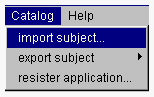
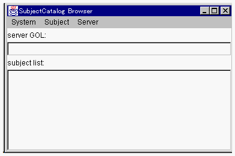
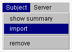

カタログサーバからサブジェクトをインポートする
構築したアプリケーションをプログラマ間で共用するために、OZシステムはカタログサーバを持っています。プログラマはカタログサーバからサブジェクトをインポートして利用することができます。また、構築したアプリケーションをカタログサーバにエクスポートすることができます。サブジェクトとはアプリケーション、クラスライブラリの配布可能単位です。

- １．スクールブラウザの Catalog メニューから import subject... メニュー項目を選択してください。

カタログブラウザが開かれます。

- このメニュー項目選択が初回の場合には、カタログサーバのGOLの入力を求めるダイアログも表示されます。

- カタログサーバのGOLをキー入力し OK ボタンをクリックすると、カタログブラウザにそのサーバに登録されたサブジェクトがリストされます。
初回以降は、前回ブラウズしていたカタログサーバがデフォルトとして設定されています。
２．サブジェクトカタログブラウザの subject list: メニューリストからインポートするサブジェクトを選択します。そして、サブジェクトカタログブラウザの
Subject メニューから import メニュー項目を選択してください。

OZ IDEのスクールブラウザにそのサブジェクトがインポートされます。
(c) 1996-1998 IPA, ETL, AT21, FSIABC, FXIS,
InArc, MRI, NUL, SBC, Sharp, TEC, TIS. All rights reserved.